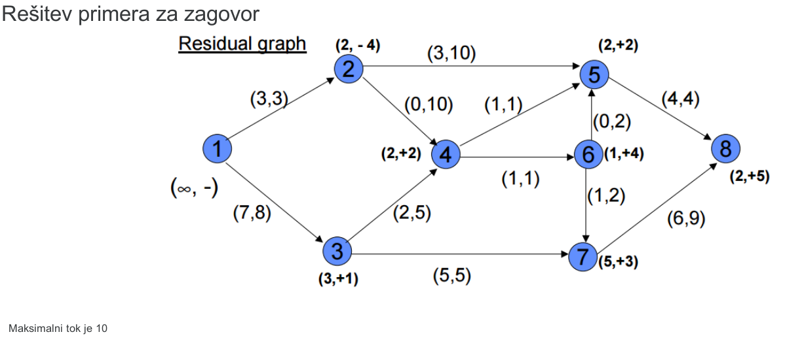
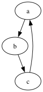
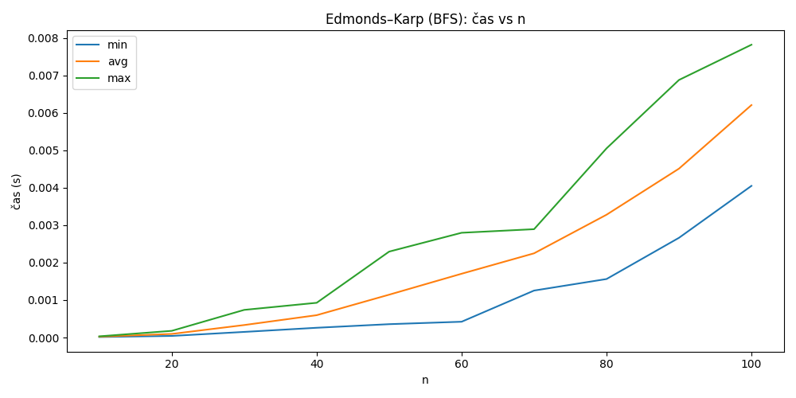
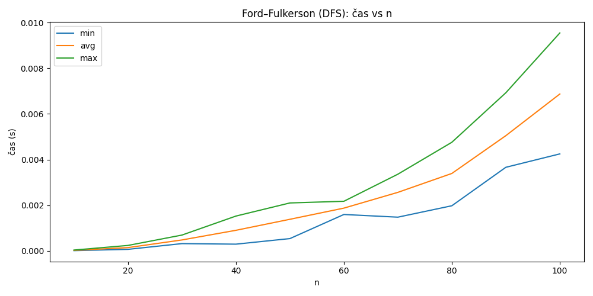
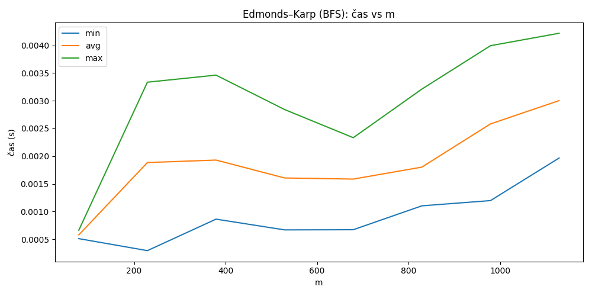
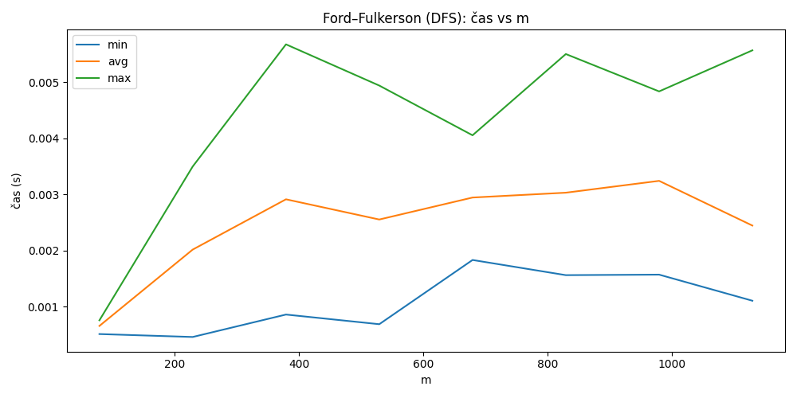

Maximum Flow Visualizer
I built a desktop application that loads a capacity network, calculates its maximum flow, and visualises the result. I implemented both Ford-Fulkerson with depth-first search and Edmonds-Karp with breadth-first search.
Application
The interface loads a graph from a text file, allows source and sink selection, and shows the flow and capacity for every edge.

Graph result
The output graph labels each edge with the calculated flow and its capacity.

Timing comparison
I generated connected random graphs and measured both implementations while changing the number of nodes and edges.



